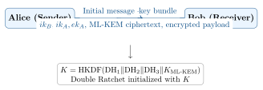

Chapter 9: PQC Applications and National Solutions¶
9.1 TLS and Secure Web Communication¶
TLS (Transport Layer Security) is the most widely deployed cryptographic protocol. Migrating TLS to PQC protects web, API, VPN, and data-center traffic.
9.1.1 TLS 1.3 with PQC¶
TLS 1.3’s clean design (fixed cipher suites, single key exchange) makes PQC integration straightforward:
# /etc/nginx/sites-enabled/pqc-server.conf
server {
listen 443 ssl;
server_name pqc.example.com;
# ML-DSA-65 server certificate and key
ssl_certificate /etc/ssl/certs/server_mldsa65.pem;
ssl_certificate_key /etc/ssl/private/server_mldsa65_key.pem;
# TLS 1.3 only; include hybrid PQC key exchange
ssl_protocols TLSv1.3;
ssl_ecdh_curve X25519MLKEM768:x25519:prime256v1;
# Cipher suites (AES-256 preferred for PQC era)
ssl_ciphers TLS_AES_256_GCM_SHA384:TLS_CHACHA20_POLY1305_SHA256;
# OCSP stapling for certificate revocation
ssl_stapling on;
ssl_stapling_verify on;
location / {
proxy_pass http://backend;
add_header X-PQC-KEM X25519MLKEM768 always;
}
}
9.1.2 Cloudflare’s PQC Deployment¶
Cloudflare has been the largest early deployer of PQC at scale:
-
Deployed X25519MLKEM768 by default on all Cloudflare edge servers (2024).
-
Over 50% of TLS connections to Cloudflare now use PQC key exchange.
-
Conducted measurement studies showing negligible performance impact (\(<\)0.5% latency increase).
-
Published open research on hybrid PQC deployment at internet scale.
9.2 Secure Messaging¶
9.2.1 Signal’s PQXDH Protocol¶
Signal’s Post-Quantum Extended Diffie-Hellman (PQXDH) provides PQC forward secrecy for messaging:

9.2.2 Apple iMessage PQ3¶
Apple PQ3 (February 2024) provides Level 3 post-quantum security:
-
Initial session: ML-KEM-768 hybrid with X25519 for initial key exchange.
-
Periodic re-keying: ML-KEM encapsulation in every message re-establishes forward secrecy.
-
Authentication: ECDSA + ML-DSA composite signatures on device keys.
-
Reach: Protects over 1 billion iMessage users by default since iOS 17.4.
9.3 Public Key Infrastructure (PKI)¶
9.3.1 X.509 PQC Certificates¶
PQC certificates have significantly different sizes from classical certificates:
| Algorithm | Public Key (B) | Sig (B) | Cert size (B) | Chain (B) |
|---|---|---|---|---|
| RSA-2048 | 256 | 256 | \(\approx\)1000 | \(\approx\)4000 |
| ECDSA P-256 | 64 | 64 | \(\approx\)500 | \(\approx\)2000 |
| ML-DSA-44 | 1312 | 2420 | \(\approx\)4200 | \(\approx\)12000 |
| ML-DSA-65 | 1952 | 3309 | \(\approx\)5800 | \(\approx\)17000 |
| SLH-DSA-SHA2-128f | 32 | 17088 | \(\approx\)17700 | \(\approx\)52000 |
Certificate Size Impact
ML-DSA-65 certificates are \(\sim\)10\(\times\) larger than ECDSA P-256. This impacts TLS handshake performance (more data transmitted) but is well within acceptable limits for most applications. SLH-DSA’s large signatures may cause issues in protocols with size limits.
9.3.2 Certificate Transparency (CT) Impact¶
Larger PQC certificates also increase the storage and bandwidth requirements for Certificate Transparency logs. CT log operators are planning infrastructure upgrades for the PQC era.
9.4 Code Signing¶
Code signing with PQC protects against quantum-enabled code tampering:
import oqs
import hashlib
import json
import os
def sign_artifact(artifact_path: str, sk_path: str, output_path: str):
"""Sign a file artifact with SLH-DSA-SHA2-128f."""
# Read artifact and compute its hash
with open(artifact_path, 'rb') as f:
data = f.read()
artifact_hash = hashlib.sha256(data).digest()
# Create signing metadata
metadata = {
"file": os.path.basename(artifact_path),
"size": len(data),
"sha256": artifact_hash.hex(),
"algorithm": "SLH-DSA-SHA2-128f",
"version": "1.0"
}
msg = json.dumps(metadata, sort_keys=True).encode()
# Load private key and sign
with open(sk_path, 'rb') as f:
sk = f.read()
signer = oqs.Signature("SPHINCS+-SHA2-128f-simple") # SLH-DSA
signature = signer.sign(msg, sk)
# Write signature bundle
bundle = {
"metadata": metadata,
"signature": signature.hex()
}
with open(output_path, 'w') as f:
json.dump(bundle, f, indent=2)
print(f"Signed {artifact_path} -> {output_path}")
print(f"Signature size: {len(signature)} bytes")
def verify_artifact(artifact_path: str, bundle_path: str, pk_path: str):
"""Verify a PQC-signed artifact."""
with open(artifact_path, 'rb') as f:
data = f.read()
with open(bundle_path) as f:
bundle = json.load(f)
with open(pk_path, 'rb') as f:
pk = f.read()
# Verify hash
actual_hash = hashlib.sha256(data).hexdigest()
assert actual_hash == bundle["metadata"]["sha256"], "Hash mismatch!"
# Reconstruct signed message
msg = json.dumps(bundle["metadata"], sort_keys=True).encode()
sig = bytes.fromhex(bundle["signature"])
# Verify signature
verifier = oqs.Signature("SPHINCS+-SHA2-128f-simple")
is_valid = verifier.verify(msg, sig, pk)
print(f"Signature {'VALID' if is_valid else 'INVALID'}")
return is_valid
9.5 Blockchain and Quantum-Resistant Ledgers¶
9.5.1 Bitcoin and ECDSA Vulnerability¶
Bitcoin uses ECDSA over secp256k1 for transaction signing. A CRQC running Shor’s algorithm could:
-
Derive private key from public key in polynomial time.
-
Sign fraudulent transactions on behalf of any address that has revealed its public key.
-
Addresses that have never transacted (public key not revealed) are safer, but transacted addresses are vulnerable.
9.5.2 Quantum Resistant Ledger (QRL)¶
QRL is the first proof-of-work blockchain using PQC natively:
-
Uses XMSS (eXtended Merkle Signature Scheme) for all transaction signing.
-
Stateful key management: each QRL wallet manages XMSS tree state.
-
Proof-of-Work consensus with XMSS-signed blocks.
-
Fully operational since 2018.
9.6 National and Indigenous PQC Solutions¶
Countries and regions have developed indigenous PQC cryptographic standards and algorithms alongside (or instead of) NIST standards.
9.6.1 China: SM-Series Cryptography¶
China’s commercial cryptographic standards are managed by the State Cryptography Administration (SCA, or OSCCA):
| Standard | Type | Description | Status |
|---|---|---|---|
| SM2 | ECC Signature/KEM | 256-bit elliptic curve; used in Chinese PKI | Mandatory for gov. |
| SM3 | Hash | 256-bit hash function; similar to SHA-256 | Mandatory |
| SM4 | Block cipher | 128-bit key, 128-bit block; replace AES | Mandatory |
| SM9 | Identity-based | Pairing-based identity-based encryption | Optional |
| ZUC | Stream cipher | SNOW-based; used in LTE/5G | Telecom standard |
China’s PQC research: CNITSEC (National Research Center for Information Technology Security) is actively developing indigenous PQC algorithms. SM2/SM9 are quantum-vulnerable; China is expected to announce indigenous PQC standards from their national standardization body.
9.6.2 Russia: GOST Cryptographic Standards¶
Russia’s GOST (state standard) cryptographic algorithms are managed by the Federal Security Service (FSB):
| Standard | Type | Description |
|---|---|---|
| GOST R 34.10-2012 | ECC Signature | 256/512-bit elliptic curve signatures (quantum-vulnerable) |
| GOST R 34.11-2012 (Streebog) | Hash | 256/512-bit hash function |
| GOST R 34.12-2015 (Grasshopper/Magma) | Block cipher | 128-bit and 64-bit block ciphers |
| GOST R 34.13-2015 | Block cipher modes | Cipher modes of operation |
Russia’s ViPNet (InfoWatch) and Crypto-Pro companies are developing PQC extensions to GOST. GOST R 34.10-2012 is quantum-vulnerable and will require replacement.
9.6.3 South Korea: KPQC¶
South Korea’s National Intelligence Service (NIS) and KISA (Korea Internet & Security Agency) conducted the Korean PQC (KPQC) competition (2022–2024):
| Algorithm | Type | Description | Level | Status |
|---|---|---|---|---|
| HAETAE | Lattice Sig | Module-lattice signature (Korean design) | 2/3/5 | Selected |
| NTRUplus | Lattice KEM | NTRU-based KEM (Korean design) | 1/3/5 | Selected |
| Peregrine | Lattice Sig | FALCON variant (Korean enhanced) | 1/3/5 | Selected |
| PALOMA | Code KEM | Code-based KEM (similar to Classic McEliece) | 1/3/5 | Selected |
| SOLMAE | Lattice Sig | Module-NTRU signature scheme | 2/3 | Selected |
KPQC winners are expected to become Korean domestic standards in 2025–2026 alongside NIST standards.
9.6.4 Germany: BSI (Bundesamt für Sicherheit in der Informationstechnik)¶
BSI provides comprehensive PQC guidance:
-
Technical Guideline TR-02102-1: Specifies approved cryptographic mechanisms.
-
Updated 2024 to include ML-KEM, ML-DSA, and SLH-DSA as approved algorithms.
-
BSI recommends hybrid PQC as the current best practice.
-
BSI mandates SLH-DSA for long-lived signatures (\(>\)10 years), ML-DSA for general use.
-
ELSI: BSI’s quantum-safe initiative for critical infrastructure.
9.6.5 France: ANSSI (Agence Nationale de la Sécurité des Systèmes d’Information)¶
ANSSI PQC position (2024):
-
Endorses NIST PQC standards while advocating for European evaluation.
-
Recommends hybrid classical+PQC for the transition period.
-
Published “Recommandations pour la migration vers la cryptographie post-quantique” (2024).
-
ANSSI emphasizes the importance of European PQC research and standards development.
-
Collaborates with ENISA (European Union Agency for Cybersecurity) on EU-wide PQC guidance.
9.6.6 Japan: CRYPTREC¶
Japan’s CRYPTREC (Cryptography Research and Evaluation Committees) manages Japanese cryptographic standards:
-
Updated the CRYPTREC cipher list to include PQC algorithms (2024).
-
Monitoring NIST PQC standards and IPA (Information-technology Promotion Agency) conducting PQC evaluation.
-
Japan’s NICT (National Institute of Information and Communications Technology) conducting research on lattice-based and hash-based PQC.
9.6.7 India¶
India’s PQC developments:
-
C-DAC (Centre for Development of Advanced Computing): Developing PQC reference implementations for Indian e-governance applications.
-
CERT-In: Issued advisories on PQC migration for government departments.
-
STQC (Standardisation Testing and Quality Certification): Evaluating PQC for FIPS-equivalent Indian standards.
-
India’s National Cyber Security Policy 2020 emphasizes indigenous cryptographic capability development.
9.6.8 Australia: ASD (Australian Signals Directorate)¶
Australia’s ASD PQC guidance:
-
Published “Post-Quantum Cryptography” guidance aligned with NSA CNSA 2.0.
-
Australian Cyber Security Centre (ACSC) recommends ML-KEM-768 and ML-DSA-65 for general use.
-
ASD participates in Five Eyes (FVEY) PQC coordination: USA, UK, Canada, Australia, New Zealand.
-
NCSC (UK), CISA (US), CCCS (Canada) jointly published PQC transition guidance.
9.6.9 Israel¶
Israel’s PQC activities:
-
NIMDA (Israel National Cyber Directorate) issued PQC transition guidelines.
-
WeizmanInstitute, Ben-Gurion University, Hebrew University active in PQC research.
-
Strong industry presence: Ironclad, Ceva Wireless PQC IP cores, SIEVERT.
9.7 IoT and Embedded Applications¶
9.7.1 DTLS 1.3 with PQC for IoT¶
DTLS (Datagram TLS) is used for UDP-based IoT communication. PQC DTLS implementations:
| Device Class | RAM | Feasible PQC | Approach |
|---|---|---|---|
| High-end IoT (RPi, ESP32-S3) | \(>\)512 KB | All NIST PQC | Full stack |
| Mid-range (STM32F4, nRF5340) | 256–512 KB | ML-KEM-768, ML-DSA-44 | pqm4 or liboqs |
| Low-end (STM32L0, nRF52832) | 64–256 KB | ML-KEM-512 | PQClean, on-the-fly |
| Ultra-constrained (\(<\)64 KB) | \(<\)64 KB | ML-KEM-512 (marginal) | Custom optimization |
9.7.2 Automotive: V2X and Secure Boot¶
Vehicle-to-Everything (V2X) communication uses ECDSA (IEEE 1609.2) for authentication. PQC migration path:
-
V2X certificates: Migrate from ECDSA P-256 to ML-DSA-44 (IEEE 1609.2 PQC extension in development).
-
Secure boot: Replace ECDSA-signed firmware with ML-DSA-signed firmware.
-
HSM integration: Automotive HSMs (e.g., SHE, AUTOSAR SecOC) require PQC hardware support.
-
Vehicle lifetime of 15+ years means cars built today may face CRQC attacks before retirement.
9.8 Summary¶
-
TLS is the most urgent migration target; X25519MLKEM768 hybrid is already deployed by Chrome, Firefox, and Cloudflare.
-
Signal (PQXDH) and Apple iMessage (PQ3) demonstrate successful PQC deployment for secure messaging.
-
PQC X.509 certificates are 5–30\(\times\) larger than ECDSA equivalents; infrastructure must be updated.
-
Bitcoin/blockchain systems using ECDSA are quantum-vulnerable; QRL demonstrates a PQC-native ledger.
-
China (SM-series), Russia (GOST), South Korea (KPQC), Germany (BSI), and Japan (CRYPTREC) are developing indigenous PQC standards and guidance.
-
Korea’s KPQC selected HAETAE, NTRUplus, Peregrine, PALOMA, and SOLMAE as domestic candidates.
-
IoT devices can implement ML-KEM-512 even on constrained platforms (\(>\)64 KB RAM).
-
Automotive V2X communication requires PQC migration due to 15+ year vehicle lifetimes.